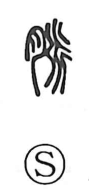

脈

Uncategorized
Kun: suji | On: myaku
vein ・ blood vessel ・ pulse ・ meridian
Explanation
The character 脈 combines the flesh sign 月, indicating a part of the body, with 辰, a graph that depicts water branching and spreading. Joined together, they picture the body’s branching waterways, and thus came to mean the veins and blood vessels through which blood flows, and by extension the palpable pulse. In traditional Chinese medicine this sense expands to the network of meridians: twelve principal jingmai and fifteen collateral luomai that course through and connect the body.